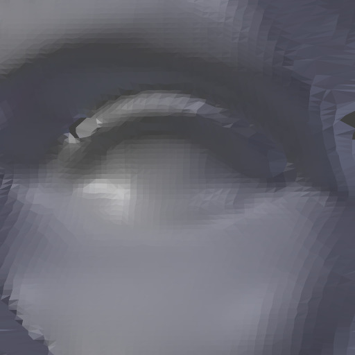
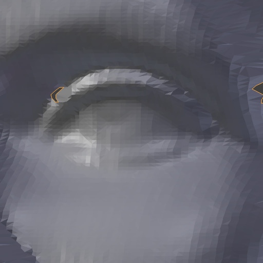
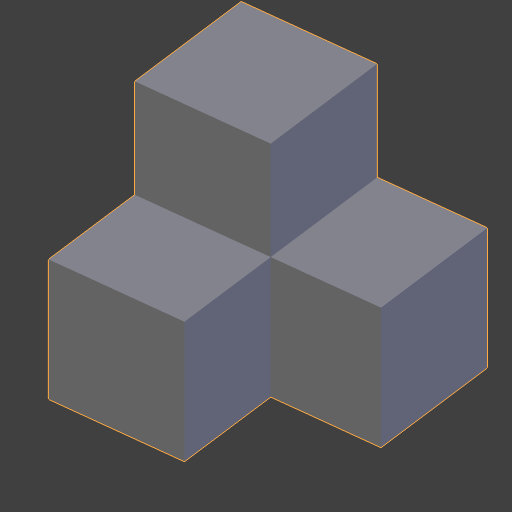
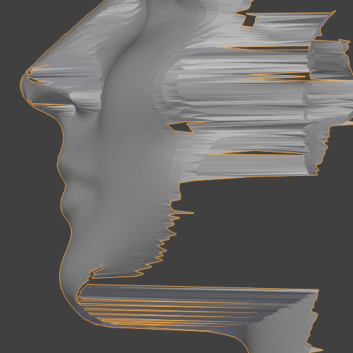
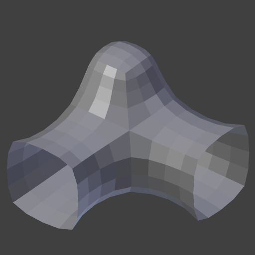
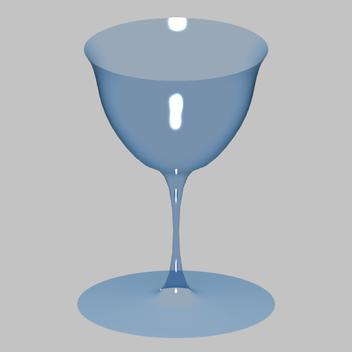
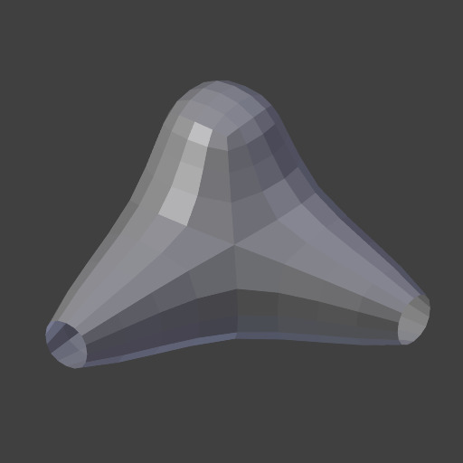

Модифікатор «Лапласове Згладження» -- Laplacian Smooth Modifier¶
Модифікатор Laplacian Smooth дозволяє вам скорочувати шум на поверхні сіті з мінімальними змінами в її формі.
Він може також перебільшувати форму, використовуючи від'ємне значення Factor.
Лапласове Згладження корисне для об'єктів, що були реконструйовані з реального світу та містять небажаний шум. Він вилучає шум, у той же час все ще зберігаючи бажану геометрію, а також форму оригінальної моделі.
Модифікатор Laplacian Smooth базується на операторі кривини потоку Лапласа Бельтрамі (Laplace Beltrami) у рівнянні дифузії.
Опції¶

Модифікатор «Лапласове Згладження» -- Laplacian Smooth.
- Повтор -- Repeat
Повтори дозволяють вам виконувати Лапласове Згладження кілька разів. Кожен повтор призводить до перерахування кривини потоку сіті і в результаті дає вилучення більше шуму з кожним повтором при використанні малого фактора -- Factor < 1.0.
Коли значення задано як 0, то жодне згладження не здійснюється.
Ghi chú
Більше повторів буде брати більше часу для розрахування. Тому, будьте обережні при його роботі на сітях з великою кількістю вершин.
З Фактор як 0.5.¶ 
Повтор: 0.

Повтор: 1.
Повтор: 5.

Повтор: 10.
З Фактор як 2.0.¶ 
Повтор: 0.

Повтор: 1.

Повтор: 10.
З Фактор як -0.5.¶ 
Повтор: 0.

Повтор: 1.

Повтор: 5.

Повтор: 10.
- Фактор -- Factor
Controls the amount of displacement of every vertex along the flow curvature.
- Використовуючи малий Factor, ви можете вилучити шуму з форми без впливу на бажану геометрію.
- Використовуючи великий Factor, ви отримуєте згладжені версії форми ціною тонких деталей геометрії.
- Використовуючи від'ємний Factor, ви можете покращити форму, зберігши бажану геометрію.
- Коли Factor є від'ємним, то багато повторів можуть збільшувати шум.

Фактор: 0.0.

Фактор: 0.5.
Фактор: 2.5.

Фактор: 5.0.
Фактор: 0.0.

Фактор: 1.0.

Фактор: 10.0.

Фактор: 50.0.

Фактор: 0.0.

Фактор: -50.0.
- Границя -- Border
Оскільки, не існує способу обчислювати потік кривини на граничних ребрах, то вони повинні контролюватися окремо. Граничні ребра згладжуються за допомогою набагато простішого методу, використовуючи цю властивість для керування впливом.
Додатні значення будуть згладжувати позиції вершин, тоді як від'ємні значення будуть «покращувати» їх, трансформуючи їх у протилежному напрямку.
З Фактор як 2.5.¶ Границя: 0.0.

Границя: 1.0.

Границя: 2.5.

Границя: 10.0.
З Фактор як 20.0.¶ 
Границя: 0.0.
Границя: 1.0.

Границя: 5.0.

Границя: 20.0.
З Фактор як -30.0.¶ 
Границя: 0.0.
Границя: -50.0.

Границя: -200.0.
- Вісь -- Axis
Перемикальні кнопки для увімкнення/вимкнення деформування вершин у напрямках осей X, Y та/або Z.
X, Y, ZX, Y, Z

X, Y, Z: Вибрано.

X, Y: Вибрано.

X: Вибрано.

X, Y, Z: Не вибрано.
X, Y, Z: Вибрано.

X, Y: Вибрано.

X: Вибрано.
- Зберігання Об'єму -- Preserve Volume
Процес згладжування може продукувати скорочення. Це значимо для великих значень Factor або Repeat; для зменшення цього ефекту ви можете використати цю опцію.

Вимк -- Off.

Вимк -- Off.

Увім -- On.
- Група Вершин -- Vertex Group
Ім'я групи вершин для обмеження ефекту модифікатора тільки цією групою вершин. Дозволяє вибіркове реально-часове згладження або покращення з допомогою малювання вагомостей вершин.
Оригінальна геометрія Без обраної групи Вагомості вершин Результат


- Нормалізовано -- Normalized
При увімкненні результати будуть залежати від розмірів граней. При вимкненні можуть траплятися гострі виступи геометрії.

Оригінальна геометрія.

Увім -- On.

Вимк -- Off.

Вимк, високий Фактор.
{kind=link}
{kind=link}
{kind=link}
{kind=link}
{kind=link}
{kind=link}
{kind=link}
{kind=link}
{kind=link}
{kind=link}
{kind=link}
{kind=link}
{kind=link}
{kind=link}
Gợi ý
Сіті з великою кількістю вершин, більше ніж десять тисяч (10'000), можуть вимагати до кількох хвилин часу для обробки; ви можете використовувати малі порції сіті для тестування перед виконанням цього модифікатора на усій моделі.